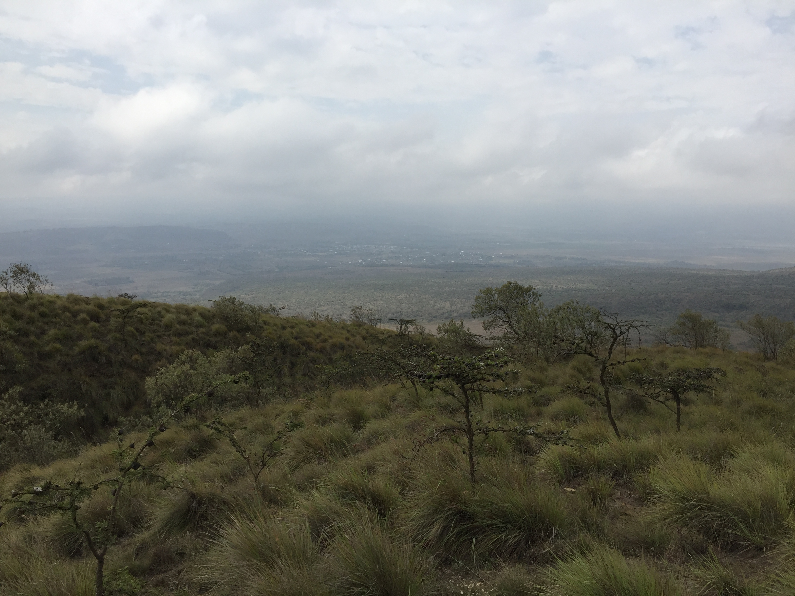

Personal Page
Samuel Oluoch
About Me
I have a great interest in matters technology,
which highly influenced my study in the field of Engineering.
I am a Mechanical and Manufacturing Engineering graduate
from The University of Nairobi. I have experience in
Engineering Designs using CAD software. Regarding employment,
I currently do not have experience since I am UoN's Class of 2017
graduate, and I opted to further my studies after graduation.
As mentioned previously, I am tech fun, and this motivated
my decision to learn programming. I believe that the combination of
my Mechanical Engineering skills with that of programming will
enable me automate machines. Additionally, I will be able to create
apps that would be used to control industrial machines and
equipments.

Despite my strong focus on the tech industry, I also have fun in life.
I enjoy travelling, swimming, and sunset-walks.
Projects I have Created Alone
- Hello World
This was my first website "Hello-World"
Projects I have Created with my Pair, Austin
- Assignment 1
This was the first assignment